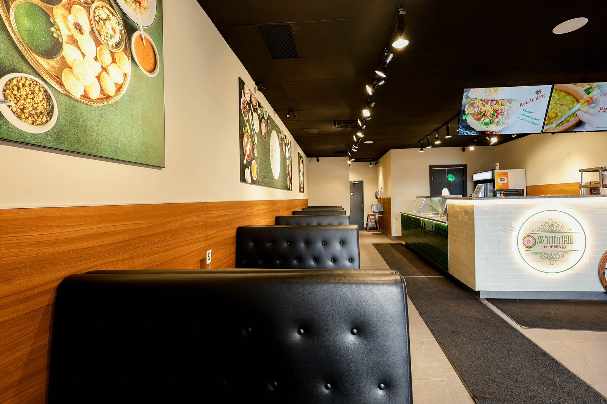
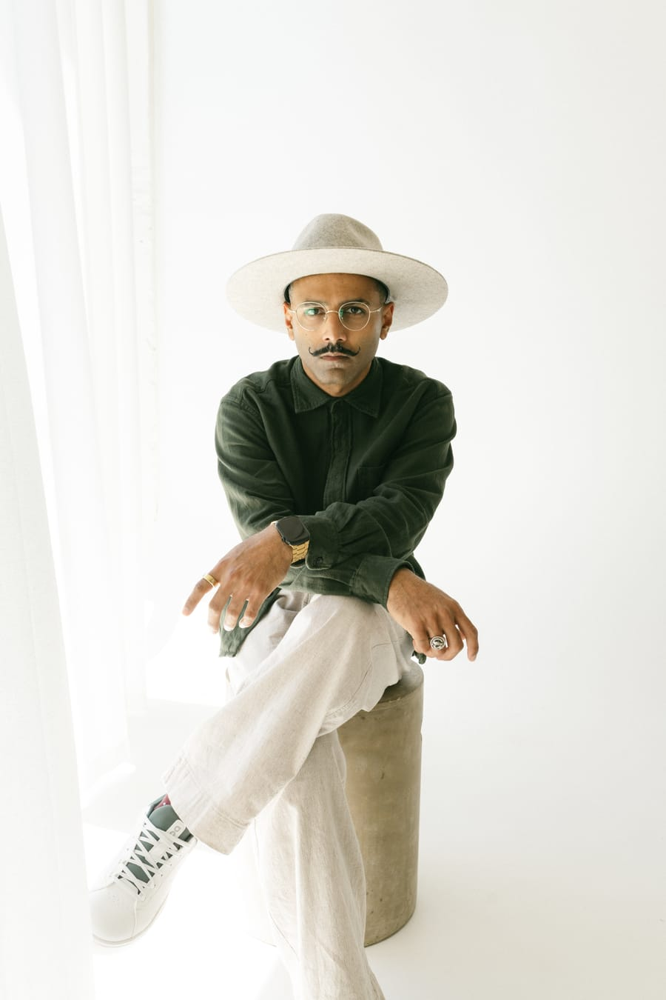
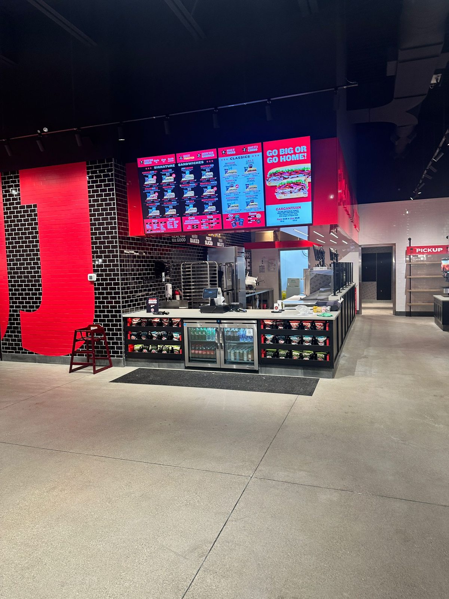

Explore project
Explore projectService counter, seating, kitchen infrastructure and interior finishes.
Design + Construction / Canada
Terranode designs, plans and builds.
Homes. Hospitality. Commercial spaces.

02 / A considered approach
We begin by talking about the space: who uses it, what works now and what needs to change.
Then we look at design, scope and the work on site together, so the practical questions have room in the plan.
03 / Selected completed work
Explore completed restaurant and hospitality projects, with the planning, interior details and construction work described on each project page.
Completed under LifeBuild Canada. Shown here as prior project experience; the documented work is described on each page.
Explore projectService counter, seating, kitchen infrastructure and interior finishes.
 Explore project
Explore projectDining room, service area and commercial kitchen coordinated as one buildout.
 Explore project
Explore projectRestaurant planning, construction, kitchen flow and branded finishes.
 Explore project
Explore projectFront counter, back-of-house preparation and dine-in layout.
04 / The people behind the work
There can be a lot to sort out at the start of a project. Tell us what you know, what you’re unsure about and what matters most. Dipesh and Manjil stay directly involved in the conversations and the work that follows.
The projects shown here were completed under LifeBuild Canada before Terranode. They show some of the planning and construction experience behind this team.
Planning + construction
Director / Terranode
Manjil works through the technical side of a project: the scope, estimate, schedule and trades needed to build it. He stays involved as those plans become work on site. When a detail needs a practical answer, he helps work it through.
Talk with Manjil about the plans, the schedule and the work on site.

Clients + coordination
Director / Terranode
Dipesh handles the conversations that help a project take shape. You can talk with him about what you need from the space and what still feels unresolved. He connects those priorities with sourcing, operations and the day-to-day decisions that follow.
Bring an idea, a concern or a question. You don’t need a finished brief.
We look at the work together before taking it on. Send us what you know so far, and we can talk through the questions, the scope and whether we’re the right fit.
Tell us what you have in mind05 / Design, planning + construction
Terranode provides design, project planning and construction for residential, hospitality and commercial spaces.
Home renovations and improvements, shaped around how you live and carried through planning to construction.
Restaurant interiors, franchise buildouts and commercial spaces, with customer experience and day-to-day operations considered together.
We connect the brief, technical decisions, sourcing, schedule and site work so the project moves forward with a clear scope.
06 / How a project begins
You don’t need a finished plan.
Tell us what you know and what you’d like help figuring out.
Tell us where the space is, what you’d like to change and any timing you have in mind. It’s fine if some details are still open.
We review your note and get in touch to understand your priorities, your questions and the work involved.
If the project is a fit, we outline the scope, responsibilities and next step before work begins.
Your project
A renovation. A restaurant. A commercial space.
Tell us what you’re considering, even if the plan is still taking shape.
Prefer email? Write to info@terranode.ca.
